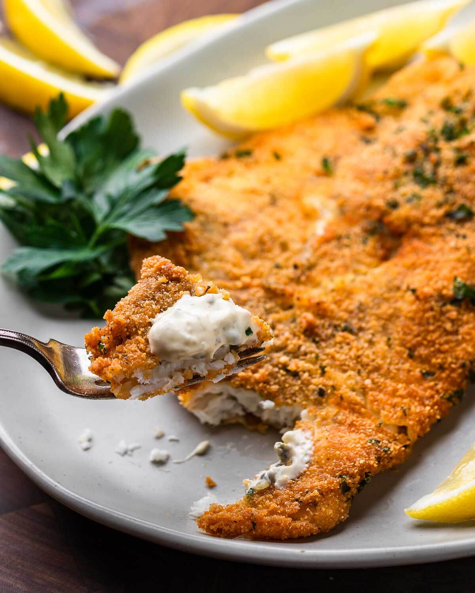

Fried Flounder

For best results use fresh not frozen
If you don't like seafood flounder is a safe bet as it has a mild taste!
Frying it instead of baking makes a huge difference in flavor too.
Ingredients
- 2 cups plain bread crumbs
- 1/4 cup parsley
- 1 1/2 teaspoons dried oregano
- 1/4 teaspoon garlic powder
- 1 teaspoon salt
- 1/2 teaspoon black pepper
- 1 1/2 pounds flounder filets
- salt and pepper to taste
- 2 cups olive oil
- 1/2 cup flour for dredging
- 3 large eggs beaten
Recipe Steps
- Fill a heavy pan to a 1/2-inch high with olive or vegetable oil. Heat oil to 360-370f.
- Dry off the fish fillets with paper towels and season with salt and pepper on both sides.
- Dredge a flounder fillet into the flour and shake off the excess. Place the floured fillet into the egg mixture and coat well on both sides. Finally, place the fillet into the breadcrumbs making sure to coat well on both sides. Set the fillet onto a parchment paper-lined baking sheet. Repeat the process for the remaining flounder.
- Once the oil reaches the proper frying temp, begin frying the fish until golden and cooked through (about 3-4 minutes per side). Set the fried flounder onto a wire rack or paper towel-lined plates. Note: Do not crowd the pan. Work in batches. Serve with lemon wedges and/or tartar sauce.